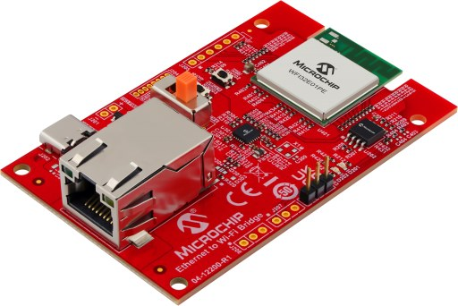

Microchip EV49N51A (Ethernet to Wi-Fi Bridge)

The Microchip EV49N51A Ethernet to Wi-Fi Bridge board
This page documents the NuttX port to the Microchip EV49N51A, the “Ethernet to Wi-Fi Bridge” reference design built around the WFI32E01PE Wi-Fi module. The module contains a PIC32MZ1025W104132 (PIC32MZ-W1 family) microcontroller.
Features
WFI32E01PE module (PCB antenna) with a PIC32MZ1025W104132:
MIPS32 M-Class core at 200 MHz
1 MB program flash, 256 KB data RAM
40 MHz crystal inside the module
2.4 GHz IEEE 802.11 b/g/n Wi-Fi (not supported by NuttX)
SST26VF032B 32 Mbit (4 MB) SPI serial flash (U202)
LAN8720A 10/100 Ethernet PHY (U301, RMII) with RJ45 connector J301
USB Type-C connector J202 (5 V power input only; the data lines are not connected) and MCP1727 3.3 V regulator
Debug UART header J203
Two user LEDs and one user button
ICSP header J204 (not fitted on the kit)
Supported hardware
Peripheral |
Status |
Notes |
|---|---|---|
UART1 |
Yes |
NSH console on J203 |
Timers |
Yes |
System tick |
GPIO |
Yes |
|
SPI1 |
Yes |
SST26VF032B; reads tested only |
I2C1/I2C2 |
Build |
Not tested; no I2C device on board |
Ethernet |
Yes |
LAN8720A, RMII, 10/100 Mbps |
Wi-Fi |
No |
Pin mapping
Module pads and chip pins as wired on the EV49N51A (schematic 02-01134 Rev 2):
Pin |
Signal |
Notes |
|---|---|---|
RA8 |
U1RX |
Debug UART, dedicated pin (not PPS) |
RA9 |
U1TX |
Debug UART, dedicated pin (not PPS) |
RK1 |
LED D201 (red) |
Active high |
RK3 |
LED D202 (green) |
Active high |
RA10 |
SW202 |
User button, low when pressed |
RA1 |
SST26 CS |
GPIO, active low |
RPC6 |
SPI1 SCK |
Dedicated SPI1 pin ( |
RPC7 |
SPI1 SDI |
Dedicated SPI1 pin |
RPC8 |
SPI1 SDO |
Dedicated SPI1 pin |
RB4 / RB5 |
PGC2 / PGD2 |
ICSP (J204), debug channel 2 |
RA4 / RA5 |
I2C1 |
GPIO header footprint (not fitted) |
RC12 |
ETH_CLK_OUT |
50 MHz RMII reference clock to MAC and PHY |
RC13 |
ETXEN |
Dedicated Ethernet pin |
RC15 / RC14 |
ETXD0 / ETXD1 |
Dedicated Ethernet pins |
RC11 / RC10 |
ERXD0 / ERXD1 |
Dedicated Ethernet pins |
RK12 |
ECRSDV |
Dedicated Ethernet pin |
RC9 |
ERXERR |
Dedicated Ethernet pin |
RK14 / RK13 |
EMDC / EMDIO |
PHY management interface, PHY address 0 |
RA14 |
PHY nRST |
GPIO, active low |
Clocking
Unlike the PIC32MZ EC/EF families, the PIC32MZ-W1 does not configure its
PLLs from the configuration words. At boot, pic32mz_wfi32_pwrclk.c:
On B0 silicon, after a power-on or brown-out reset, switches the power management unit (PMU) from its power-on MLDO mode to buck mode, using the factory trim values stored in the device.
CONFIG_PIC32MZ_W1_PMU_MLDO=yskips this step and keeps the PMU in MLDO mode.Starts the 40 MHz primary oscillator inside the module.
Programs the system PLL (40 MHz / 5 * 150 / 6 = 200 MHz) and the Ethernet/Wi-Fi PLL, and switches SYSCLK to the system PLL. When the Ethernet MAC is enabled, the Ethernet/Wi-Fi PLL also drives the 50 MHz RMII reference clock on ETH_CLK_OUT.
The peripheral bus clocks are set in include/board.h:
Clock |
Divider |
Frequency |
Used by |
|---|---|---|---|
PBCLK1 |
5 |
40 MHz |
Timers, UART3 |
PBCLK2 |
2 |
100 MHz |
I/O ports, I2C1, ADC, CAN |
PBCLK3 |
4 |
50 MHz |
UART1/2, SPI1/2, I2C2 |
PBCLK4 |
10 |
20 MHz |
RTCC, DSCON |
PBCLK5 |
2 |
100 MHz |
Flash, crypto, SQI |
PBCLK6 clocks the CPU on PIC32MZ-W1 and is not changed.
The program flash uses CONFIG_PIC32MZ_W1_FLASH_WAITSTATES wait states
(5 by default at 200 MHz).
Configuration words
The build places the configuration words (DEVCFG0/1/2/4, FBCFG0, FCPN0 and
FSIGN0) in nuttx.hex, so no separate configuration step is needed when
flashing. They are set through Kconfig (PIC32MZ_* options in
arch/mips/src/pic32mz/Kconfig). The nsh configuration selects ICSP
channel 2 (CONFIG_PIC32MZ_ICESEL_CH2) and keeps the secondary
oscillator disabled: the 32.768 kHz crystal X401 is not fitted on the kit.
Toolchains
The port builds with two toolchains:
CONFIG_MIPS32_TOOLCHAIN_PINGUINOL: the Pinguino p32-gcc toolchain, also used by the NuttX CI for all MIPS boards. It can be downloaded from https://github.com/PinguinoIDE/pinguino-compilers:$ curl -sSL -O https://github.com/PinguinoIDE/pinguino-compilers/releases/download/v20.10/pinguino-linux64-p32.zip $ unzip pinguino-linux64-p32.zip $ export PATH=$PWD/p32/bin:$PATH
CONFIG_MIPS32_TOOLCHAIN_MICROCHIPL_XC32: Microchip MPLAB XC32 for Linux (tested with v6.00), selected by thenshdefconfig.
XC32 v6 and later no longer include device support and need the
PIC32MZ-W Device Family Pack (DFP). Extract the
Microchip.PIC32MZ-W_DFP .atpack file (a zip archive) to
~/microchip/WFI32-W_DFP, or point WFI32E01_DFP_DIR at another
location:
$ make WFI32E01_DFP_DIR=/path/to/PIC32MZ-W_DFP
Flashing
The EV49N51A has no on-board programmer. The flash is programmed through the ICSP header J204 (MCLR, PGC2/RB4, PGD2/RB5, 3.3 V, GND), which is not fitted on the kit, using a Microchip programmer and MPLAB IPE. The port was tested with a PICkit 3:
$ cd /opt/microchip/mplabx/v6.20/mplab_platform/mplab_ipe
$ ./ipecmd.sh -P32MZ1025W104132 -TPPK3 -M -F/path/to/nuttx/nuttx.hex -Y -OL
-M programs the whole device, -Y verifies it and -OL releases
the device from reset. For other programmers, change -TPPK3 (for
example -TPPK4 for a PICkit 4).
Warning
Programming erases the factory firmware. Read it back first with MPLAB IPE if you want to restore it later.
Note
Debugging through a PICkit 3 does not work with this device
(MPLAB X marks PICkit 3 support for it as beta). Programming works.
For early boot problems, use CONFIG_PIC32MZ_W1_BOOTTRACE (see
below).
Configurations
Each configuration is built with:
$ ./tools/configure.sh -l ev49n51a:<config>
$ make
To build with the Pinguino toolchain instead of XC32:
$ ./tools/configure.sh -l ev49n51a:nsh
$ kconfig-tweak --disable MIPS32_TOOLCHAIN_MICROCHIPL_XC32 \
--enable MIPS32_TOOLCHAIN_PINGUINOL
$ make olddefconfig
$ make
nsh
Basic NuttShell configuration with the console on UART1. Connect a 3.3 V USB-to-serial adapter to J203:
J203 pin |
Signal |
Adapter |
|---|---|---|
1 |
U1RX (RA8) |
TX |
2 |
U1TX (RA9) |
RX |
3 |
GND |
GND |
and open it at 115200 8N1, without flow control.
The SST26VF032B serial flash is registered as /dev/mtdblock0.
nsh> uname -a
NuttX 13.0.1-RC1 ec7277eeba Oct 3 2026 17:10:38 mips ev49n51a
nsh> ls -l /dev
/dev:
crw-rw-rw- 0 console
brw-rw-rw- 4194304 mtdblock0
crw-rw-rw- 0 null
crw-rw-rw- 0 ttyS0
crw-rw-rw- 0 zero
netnsh
The nsh configuration with networking: Ethernet, IPv4, TCP, UDP and
ICMP, the ping command and a Telnet server on port 23. The interface is
brought up at boot with the default static address of the network
initialization (CONFIG_NETINIT_IPADDR, 10.0.0.2/24 with 10.0.0.1 as
the default router) and the MAC address 02:e0:de:ad:be:ef
(CONFIG_NETINIT_MACADDR_1/2). Change these to match your network.
The example below was taken with CONFIG_NETINIT_IPADDR set to
192.168.100.2 and CONFIG_NETINIT_DRIPADDR to 192.168.100.1:
nsh> ifconfig
eth0 Link encap:Ethernet HWaddr 02:e0:de:ad:be:ef at RUNNING mtu 1500
inet addr:192.168.100.2 DRaddr:192.168.100.1 Mask:255.255.255.0
nsh> ping -c 3 192.168.100.1
PING 192.168.100.1 56 bytes of data
56 bytes from 192.168.100.1: icmp_seq=0 time=0.0 ms
56 bytes from 192.168.100.1: icmp_seq=1 time=0.0 ms
56 bytes from 192.168.100.1: icmp_seq=2 time=0.0 ms
3 packets transmitted, 3 received, 0% packet loss, time 3030 ms
rtt min/avg/max/mdev = 0.000/0.000/0.000/0.000 ms
Ethernet
The LAN8720A PHY is connected to the MAC through RMII and is managed through MDIO at PHY address 0. The board code pulses the PHY reset (RA14) at boot, after the reference clock is running.
The PHY interrupt output (nINT) reaches RK6 only through R309, which is not
fitted. If you fit R309, select CONFIG_EV49N51A_PHY_INTERRUPT to use it
as a link up/down interrupt. With CONFIG_NETINIT_MONITOR the network
initialization thread then takes the interface down when the cable is
removed and brings it up again when it is reconnected, including when the
board boots without a cable.
The 50 MHz RMII reference clock comes from ETH_CLK_OUT (RC12) through R313.
The board also has a footprint for a 50 MHz oscillator (X1, not fitted)
that can clock the PHY through R314 (not fitted). If you fit X1 and R314,
select CONFIG_PIC32MZ_W1_ETH_EXTREFCLK so that ETH_CLK_OUT is left
disabled and the MAC uses the oscillator clock on the same pin.
The PIC32MZ-W1 has no factory-programmed Ethernet MAC address. Assign one
with CONFIG_NETINIT_NOMAC or with the SIOCSIFHWADDR ioctl before the
interface is brought up.
L1 cache
Both configurations enable the 16 KB instruction and 16 KB data caches
(CONFIG_MIPS32_ICACHE, which also selects CONFIG_MIPS32_DCACHE).
The linker script places the data memory in KSEG0, so that it goes through
the D-Cache; KSEG0 is uncached when the caches are disabled. The Ethernet
driver performs the D-Cache maintenance around its DMA transfers.
CONFIG_BOARD_LOOPSPERMSEC (22224) is calibrated with the caches
enabled. If you disable them, set it to 7245, or the busy-wait delays will
be about three times too long.
Boot trace
CONFIG_PIC32MZ_W1_BOOTTRACE=y prints one character on UART1 for each
PMU and clock bring-up step, before the PLLs are running. UART1 is clocked
from the internal FRC during this phase, so the baud rate is about
117647 instead of 115200; most terminals still read it. The normal console
takes over once the clocks are up.
Silicon tested: WFI32E01PE, revision B0 (DEVID 0x0A400000).
Limitations
No Wi-Fi driver.
I2C1/I2C2 build but are not tested.
SPI flash: only reads were tested (JEDEC ID and data), not writes or erases.
UART3 is not wired up.
No button driver.